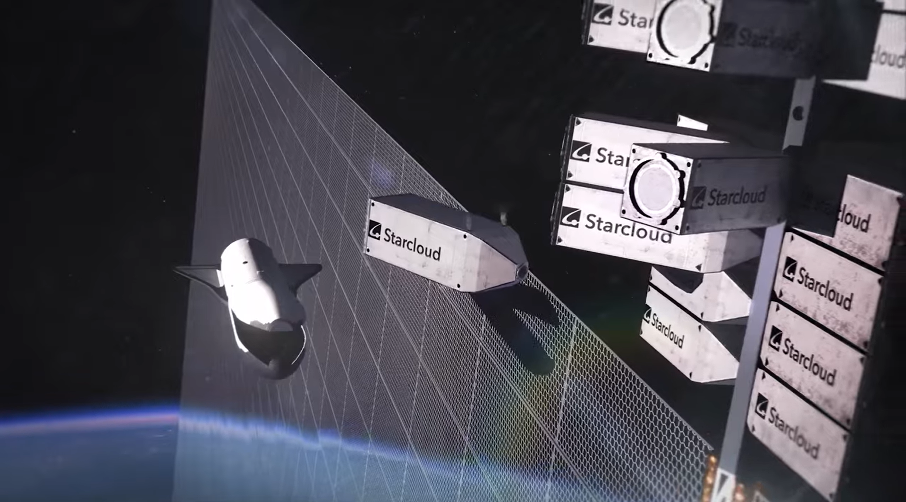
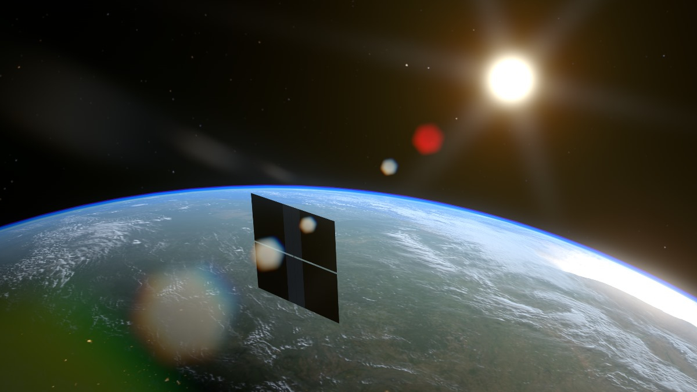

Gracze i projekty
Notatka raportu "Orbitalne centra danych". Kluczowe źródła: źródło 1, źródło 2.
W skrócie
Wyścig o centra danych na orbicie ma kilku graczy o bardzo różnym ciężarze gatunkowym. Z jednej strony stoją giganci z miliardami dolarów i własnymi rakietami (SpaceX z wnioskiem o 1 mln satelitów, Blue Origin z 51 600 satelitami "Project Sunrise", Google z badawczym Project Suncatcher i Amazon ze swoją siecią Leo), z drugiej - startupy pokazujące działające demonstratory (StarCloud z procesorem NVIDIA H100 na orbicie) oraz państwowy program chiński (Three-Body Computing Constellation, już 12 satelitów na orbicie). Dla inwestora kluczowy jest rozdźwięk między PR a realnymi przychodami: SpaceX w prospekcie S-1 sam pisze, że jego orbitalne centra danych to "niesprawdzone technologie", które "mogą nigdy nie osiągnąć rentowności" , a osobnych przychodów z orbital compute w S-1 po prostu nie ma. Wygranymi na dziś są dostawcy sprzętu i "kilofów" (NVIDIA, Phison, HPE, Red Hat, dostawcy litografii), a największe ryzyko spoczywa na tych, którzy kupują akcje wyceniane na obietnicach (IPO SpaceX celuje w ~1,75 bln USD przy ~95x przychodów). Tempo zmian jest wysokie - wnioski regulacyjne i pierwsze starty przypadają na lata 2025-2028 - ale technologia pozostaje w fazie eksperymentu.
Wyjaśnienie skrótów używanych w tej notatce: LEO = niska orbita okołoziemska (Low Earth Orbit, zwykle 500-2000 km); MEO = średnia orbita; GEO = orbita geostacjonarna (~35 786 km, satelita "wisi" nad jednym punktem Ziemi); GW = gigawat (miliard watów mocy); MW = megawat; kW = kilowat; POPS = peta operacji na sekundę (10^15 operacji/s); TOPS = bilion operacji na sekundę; Gbps/Tbps = giga-/terabity na sekundę (przepustowość łącza); GPU/TPU/ASIC = wyspecjalizowane układy do obliczeń AI; S-1 = prospekt emisyjny składany do amerykańskiego nadzoru SEC przed wejściem na giełdę; FCC = amerykański regulator częstotliwości; SSO = orbita synchroniczna ze Słońcem.
Spółki powiązane
Notowane spółki produkujące podzespoły/technologie związane z tym tematem. Pełne omówienie: spółki, dla których nisza to >=33% przychodów; skrótowe: zdywersyfikowane konglomeraty. Zob. też Słownik i Spółki z ekspozycją na giełdy europejskie.
Producenci kluczowi (>=33% przychodów z niszy - omówienie pełne):
- Rocket Lab Corporation (RKLB) - Launch (Electron/Neutron) + Space Systems: bus, ogniwa SolAero, komponenty
- Voyager Technologies, Inc. (VOYG) - Stacje kosmiczne (Starlab), systemy kosmiczne i obronne
Pozostali dominujący gracze (nisza to ułamek przychodów - omówienie skrótowe):
- NVIDIA Corporation (NVDA) - Akceleratory GPU (COTS) - ładunek obliczeniowy on-orbit
- Alphabet Inc. (GOOGL) - Project Suncatcher (TPU na orbicie)
- Planet Labs PBC (PL) - Partner Google Suncatcher (platformy/obrazowanie)
Powiązane wątki
Mapa powiązań tematycznych - jak ten wątek łączy się z resztą raportu.
- Wprowadzenie i architektury - architektury, które realizują opisani gracze
- Łączność optyczna - SpaceX wykorzystuje istniejący backbone laserowy Starlink
- Ekonomika i TCO - finansowanie i progi opłacalności poszczególnych projektów
- Regulacje i debris - wnioski FCC i autoryzacje konstelacji
- Bezpieczeństwo i geopolityka - wyścig USA-Chiny: prywatni gracze vs państwowe konstelacje
SpaceX - od Starlink-as-compute przez wniosek o 1 mln satelitów po pionową integrację (TeraFab, xAI, S-1)
SpaceX jest najbardziej agresywnym graczem pod względem skali deklaracji. 30 stycznia 2026 firma złożyła do FCC wniosek o autoryzację systemu do 1 000 000 satelitów działających jako "SpaceX Orbital Data Center system" . System ma operować na wysokościach od 500 do 2000 km w orbitach o nachyleniu 30 stopni i synchronicznych ze Słońcem , z pasmami 18,8-19,3 GHz (z kosmosu na Ziemię) i 28,6-29,1 GHz (z Ziemi w kosmos) . Wizja stojąca za tą liczbą: wynoszenie miliona ton ładunku rocznie, z mocą 100 kW na tonę, dałoby 100 GW mocy obliczeniowej AI rocznie . Konkretna masa i moc pojedynczego satelity obliczeniowego: NIE UJAWNIONE (proxy: 100 kW na tonę masy) . Implikacja dla inwestora: skala jest astronomiczna (sto razy więcej satelitów niż cały dotychczasowy Starlink), ale SpaceX poprosił FCC o zwolnienie z kamieni milowych wdrożenia (zwykle połowa konstelacji w 6 lat), co oznacza brak twardych terminów - liczba "1 mln" jest deklaracją intencji, nie planem realizacji.
W S-1 złożonym 20 maja 2026 SpaceX zapisał cel "wynosić 100 GW compute do kosmosu każdego roku" , co odpowiadałoby ok. jednej piątej rocznej produkcji energii USA (4,4 tys. TWh w 2025) i wymagałoby ok. 1 mln ton ładunku na orbitę rocznie oraz "tysięcy startów rocznie" . Wdrożenie satelitów obliczeniowych ma ruszyć "tak wcześnie jak w 2028" . Kluczowy haczyk: S-1 stwierdza wprost, że "satelity obliczeniowe w skali wymagają pełnej wielokrotnej używalności Starship, by były ekonomicznie atrakcyjne" . Cała narracja pre-IPO opiera się więc na rynku TAM (całkowity adresowalny rynek) deklarowanym w S-1 na 28,5 bln USD, z czego 26,5 bln USD przypisane do AI . Implikacja: inwestor kupuje obietnicę - osobnej pozycji przychodowej "orbital compute" w S-1 nie ma (NIE UJAWNIONE jako standalone, proxy zero-revenue) , a analityk Ainvest ocenia, że tylko "10-20% wyceny SpaceX da się obronić biznesami generującymi gotówkę dziś" .
Akwizycja xAI to filar tej pionowej integracji. 2 lutego 2026 SpaceX przejął X.AI Holdings Corp. w transakcji all-stock ; xAI wyceniono wtedy na 250 mld USD, a połączony podmiot na ~1,25 bln USD . Skonsolidowana strata netto SpaceX w 2025 wyniosła (4,9) mld USD , nakłady inwestycyjne na AI sięgnęły 12,7 mld USD , a strata operacyjna AI w I kw. 2026 to (2,47) mld USD . Jedyna twarda umowa przychodowa to kontrakt na compute z Anthropic na 1,25 mld USD miesięcznie do maja 2029 , ale dotyczy on naziemnego klastra COLOSSUS, nie orbity - zainteresowanie Anthropic orbital compute to "wyrażone zainteresowanie", nie zobowiązanie .
SpaceX TeraFab - własna fabryka chipów (proces 14A, Grimes County TX)
TeraFab to plan budowy własnej fabryki półprzewodników, by zasilić orbitalne centra danych w chipy. Dokumenty hrabstwa Grimes (Teksas) podają 55 mld USD dla początkowych faz i 119 mld USD dla pełnej rozbudowy . Lokalizacja to Gibbons Creek Reservoir , z gruntami ponad 6000 akrów i strefą reinwestycji ponad 22 000 akrów . Cel produkcyjny: do 1 terawata sprzętu obliczeniowego rocznie , startując od 100 tys. waferów miesięcznie i dochodząc do 1 mln waferów/miesiąc , przy czym ok. 80% produkcji miałoby trafić do satelitów orbitalnych, a 20% do naziemnych DC . Deklarowane terminy Muska: pierwsze wafery w 2027, masowa produkcja w 2028 .
Technologicznie TeraFab ma używać procesu litograficznego Intel 14A , ale relacja z Intelem jest na etapie umowy ramowej bez wiążących zobowiązań . CEO ASML potwierdził rozmowy z Muskiem i ocenił, że jest "bardzo poważny" wobec projektu , kontaktowano też Applied Materials, Tokyo Electron i Lam Research , a Hanmi Semiconductor zadeklarował inwestycję 50 mld KRW w SpaceX . Konkretna umowa zakupowa na narzędzia EUV od ASML: NIE UJAWNIONE (brak publicznego zamówienia) . Ulgi podatkowe: hrabstwo Grimes uchwaliło 100% abatement podatku od nieruchomości na 10 lat (2027-2036) głosami 4-1 , z roczną płatnością zastępczą 20 mln USD po 2036 oraz minimalnym wymogiem inwestycji 5 mld USD do 2030 i 1800 miejsc pracy do 2035 . Implikacja dla inwestora: skala TeraFab budzi sceptycyzm analityków - Stacy Rasgon z Bernstein szacuje koszt 1 TW chipów rocznie na 5-13 bln USD i pisze, że "prawdziwy Terafab wydaje się naciągany", podczas gdy Andrew Percoco z Morgan Stanley nazywa projekt "herkulesowym zadaniem" i wycenia pełny koszt na 35-45 mld USD - rozpiętość samych szacunków pokazuje, jak niepewny jest fundament wyceny.
Google - Project Suncatcher (TPU na orbicie, partner Planet Labs, demo ~2027)
Google podchodzi do tematu jako do "moonshotu" badawczego, nie biznesu. Partnerem jest Planet Labs, który zbuduje i obsłuży 2 prototypowe satelity z celem startu na początek 2027 . Na orbitę ma trafić Trillium (Cloud TPU v6e) - własny układ Google do AI - który w teście wiązką protonów 67 MeV nie wykazał trwałych uszkodzeń do dawki 15 krad(Si), co Google określa jako "zaskakująco odporny na promieniowanie" . Argument ekonomiczny: panel słoneczny na właściwej orbicie jest do 8 razy bardziej produktywny niż na Ziemi . Architektura ilustracyjna to klaster 81 satelitów o promieniu 1 km na wysokości 650 km , z demonstratorem łączności optycznej osiągającym 1,6 Tbps łącznie . Google zakłada spadek kosztu startu poniżej 200 USD/kg do połowy lat 30. . Moc pojedynczego satelity Suncatcher: NIE UJAWNIONE (projekt w fazie badawczej) . Implikacja: Google przyznaje, że koncepcja "nie jest wykluczona przez fizykę ani bariery ekonomiczne", ale pozostają wyzwania - zarządzanie ciepłem, łączność z Ziemią i niezawodność na orbicie . Dla inwestora to sygnał, że nawet najbogatszy gracz traktuje to jak eksperyment z horyzontem dekady, nie produkt.
Project Sunrise = Blue Origin LLC (NIE Amazon) - 51 600 satelitów + TeraWave
Częsty mit do sprostowania: "Project Sunrise" nie jest projektem Amazon.com, lecz Blue Origin LLC (prywatnej firmy Bezosa). Wniosek FCC złożyła Blue Origin, prosząc o autoryzację systemu do 51 600 satelitów na orbitach synchronicznych ze Słońcem na wysokości 500-1800 km, o nachyleniu 97-104 stopni, po 300-1000 satelitów na płaszczyznę . Łączność ma opierać się na łączach optycznych przez własny system backhaulowy TeraWave . Masa pojedynczego satelity Sunrise: NIE UJAWNIONE (wniosek FCC nie podaje masy ani mocy) . Sam TeraWave to osobny wniosek FCC (nr SAT-LOA-20260120-00033) na 5408 satelitów (5280 w LEO na 520-540 km + 128 w MEO na 8000-24200 km) , z deklarowaną prędkością do 6 Tbps i startem wdrożenia w IV kw. 2027 .
Project Sunrise napotkał poważny sprzeciw. NASA zgłosiła zastrzeżenia , wskazując "zauważalny brak planu mitigacji śmieci orbitalnej" oraz nakładanie się zakresu 500-1800 km z trasami lotów załogowych, co zwiększa ryzyko kolizji . Blue Origin poprosiła też FCC o zwolnienie z wymogów kamieni milowych i obligacji . Implikacja: nawet gigant z własną rakietą napotyka twardą barierę regulacyjną - sprzeciw NASA to realne ryzyko opóźnienia.
Amazon Leo / Kuiper - osobny byt (broadband, nie compute)
Amazon to trzeci, osobny podmiot z rodziny Bezosa (Amazon jest oddzielny od prywatnej Blue Origin) . Amazon Leo (dawniej Project Kuiper) to sieć szerokopasmowa z ponad 3000 satelitów , z autoryzacją FCC na rozbudowę do ponad 7700 satelitów . Kluczowe rozróżnienie: Leo to internet dla niedoinwestowanych regionów, nie orbitalne centrum danych - plan własnych orbitalnych centrów obliczeniowych Amazona: NIE UJAWNIONE . Amazon musiał ostatnio prosić FCC o 24-miesięczne przedłużenie po niedotrzymaniu harmonogramu startów . Implikacja: nie należy mylić Leo (działający broadband) z compute na orbicie - to różne biznesy, a potencjalnie nawet konkurenci wobec TeraWave/Sunrise .
StarCloud (dawniej Lumen Orbit) - działający demonstrator z NVIDIA H100
StarCloud to czołowy startup z realnym sprzętem na orbicie. Pozyskał rundę Series A o wartości 170 mln USD, osiągając wycenę 1,1 mld USD (status jednorożca) i łącznie 200 mln USD kapitału - najszybciej po demo day Y Combinator . Rundę poprowadzili Benchmark i EQT . Od pre-seedu 3 mln USD do startu satelity Starcloud-1 minęło zaledwie 21 miesięcy . W listopadzie 2025 Starcloud-1 (masa ~130 funtów / ~60 kg, wielkość małej lodówki) umieścił na orbicie procesor NVIDIA H100 - po raz pierwszy w historii . Moc Starcloud-1 to skromny 1 kW , ale firma deklaruje "100x większą moc GPU niż dotychczasowe operacje kosmiczne" i 10x niższe koszty energii mimo startów rakiet . Na orbicie wytrenowano też pierwszy model AI (nano-GPT), uruchomiono Gemini i pokazano fine-tuning .
Następny krok - Starcloud-2 (start w październiku 2026) - ma generować 100x więcej mocy niż poprzednik i nieść największy komercyjny radiator wysłany w kosmos , z konfiguracją obejmującą układ NVIDIA Blackwell, sprzęt AWS Outposts oraz układy ASIC do kopania bitcoinów . Starcloud będzie pierwszym, który wyniesie sprzęt AWS Outposts w kosmos . Firma złożyła wniosek FCC na konstelację do 88 000 satelitów i celuje w pierwsze gigawatowe centrum danych w kosmosie, zasilane macierzą słoneczną 4 km kw. - docelowo 5 GW mocy orbitalnej (moc całej docelowej konstelacji: NIE UJAWNIONE jako liczba poza tym celem) . Partnerami są AWS, Google Cloud, NVIDIA i Crusoe ; Crusoe planuje wdrożenie na satelicie Starcloud pod koniec 2026 i ograniczoną moc GPU z kosmosu od początku 2027, deklarując się jako "pierwszy publiczny operator chmury w kosmosie" . Implikacja: StarCloud jest dowodem, że hardware AI działa na orbicie, ale przeskok od 1 kW (Starcloud-1) do 5 GW to siedem rzędów wielkości - to wciąż obietnica, nie produkt komercyjny.

Rys. 51 - Wizualizacja orbitalnego DC Starcloud (d. Lumen Orbit). Źródło: Starcloud / Observer, licencja: materialy prasowe - do uzytku wlasnego.
#grafika #gracze-i-projekty #Starcloud #render

Rys. 52 - Starcloud-1 - demonstrator z NVIDIA H100 na orbicie. Źródło: Starcloud / Financial Express, licencja: materialy prasowe - do uzytku wlasnego.
#grafika #gracze-i-projekty #Starcloud #demo
Skala deklaracji satelitarnych różni się o pięć rzędów wielkości, dlatego rozdzielamy ją na dwa wykresy: najpierw megakonstelacje "wielkiej trójki", potem mniejsi gracze i realne wdrożenia. Dzięki temu liczby pozostają czytelne mimo ogromnych różnic.
xychart-beta
title "Wnioski FCC: liczba satelitow (megakonstelacje)"
x-axis ["SpaceX", "StarCloud", "Blue Origin"]
y-axis "Liczba satelitow (tys.)" 0 --> 1000
bar [1000, 88, 51.6]
Rys. 53 - Maksymalna liczba satelitów we wnioskach FCC trzech największych graczy (w tysiącach). Dane: notatka, wnioski FCC SpaceX (1 000 000), StarCloud (88 000), Blue Origin / Project Sunrise (51 600).
Chiny - Three-Body Computing Constellation / Zhejiang Lab / ADA Space / Orbital Chenguang / CASC
Chiny mają najbardziej zaawansowane wdrożenie operacyjne, oparte o państwowe wsparcie. 14 maja 2025 rakieta Long March 2D wyniosła z Jiuquan pierwszą partię 12 satelitów "Three-Body Computing Constellation" . Łączna moc tej partii to 5 POPS i 30 TB pamięci , z laserowymi łączami międzysatelitarnymi do 100 Gbps i wydajnością 744 TOPS na satelitę . Cel docelowy to 1000 POPS z tysięcy satelitów , a w 2025 planowano rozszerzenie do ponad 50 satelitów . Operatorzy: Zhejiang Lab (dostarcza moduły AI i łączności) oraz ADA Space / Guoxing Aerospace (platforma satelitarna) . Zhejiang Lab założono w 2017 we współpracy rządu prowincji Zhejiang, Uniwersytetu Zhejiang i Alibaby . Program "Star Compute" ADA Space ma docelowo 2800 satelitów z udziałem 54 uczelni i firm . W styczniu 2026 na orbicie wdrożono model językowy Qwen3 (pierwszy raz globalnie) .
Obok tego rosnie drugi tor finansowany przez państwo: startup Orbital Chenguang zabezpieczył 57,7 mld CNY (8,4 mld USD) strategicznych linii kredytowych , z planem konstelacji 16 satelitów połączonych laserowo na orbicie SSO 700-800 km , z celem gigawatowego centrum danych do 2035 . Ważne zastrzeżenie: to "linie kredytowe, nie wydana gotówka" , a kwota equity rundy Pre-A1 to NIE UJAWNIONE . Państwowy gigant CASC (China Aerospace Science and Technology Corp.) zapowiedział budowę infrastruktury 1 GW w kosmosie w ramach 15. planu pięcioletniego (2026-2030) , choć liczba satelitów potrzebnych do 1 GW to NIE UJAWNIONE . Implikacja dla inwestora: chiński program ma realne wdrożenie na orbicie i głębokie wsparcie państwowe, ale niezależna zachodnia weryfikacja parametrów (5 POPS/30 TB) jest NIE UJAWNIONE - większość danych pochodzi z mediów państwowych .
xychart-beta
title "Mniejsze konstelacje i wdrozenia: liczba satelitow"
x-axis ["Amazon Leo", "TeraWave", "ADA Star Compute", "Orbital Chenguang", "Three-Body (orbita)"]
y-axis "Liczba satelitow" 0 --> 8000
bar [7700, 5408, 2800, 16, 12]
Rys. 54 - Pozostałe konstelacje: autoryzacja Amazon Leo (>7700), TeraWave (5408), cel ADA Space "Star Compute" (2800), Orbital Chenguang (16) i pierwsza partia chińskiej Three-Body Computing Constellation już na orbicie (12). Dane: notatka (wnioski FCC, China-in-Space, media państwowe CN).
xychart-beta
title "Pozyskane finansowanie graczy ODC (mln USD)"
x-axis ["Orbital Chenguang", "StarCloud", "Lonestar"]
y-axis "Kapital (mln USD)" 0 --> 9000
bar [8400, 200, 6.6]
Rys. 55 - Pozyskany kapitał / zabezpieczone finansowanie. Uwaga: Orbital Chenguang to 57,7 mld CNY (8,4 mld USD) linii kredytowych, nie wydana gotówka; StarCloud to łączny kapitał (z rundą Series A 170 mln USD); Lonestar to 6,6 mln USD łącznie. Dane: notatka (Carbon Credits, W.Media, DCD).
Mniejsi i sąsiedni gracze - cloud-OEM stack, GEO, Księżyc, Europa
Axiom Space buduje Orbital Data Center (ODC). Zapowiedział start 2 pierwszych węzłów ODC w LEO do końca 2025 , z dotacją 5,5 mln USD od Texas Space Commission , łączami optycznymi 2,5 Gbps (przez Kepler Communications / Skyloom) z planem 10 Gbps+ , oraz roadmapem mocy "od kilowatów do megawatów" i celem co najmniej 3 węzłów ODC do 2027 . Prototyp AxDCU-1 z Red Hat (Red Hat Device Edge) wystartował 24 sierpnia 2025 na ISS , testując chmurę, AI/ML, fuzję danych i cyberbezpieczeństwo . Pamięć masową dostarcza Phison (SSD Pascari, ponad 1 PB łącznie, pojedynczy dysk 122,88 TB) , a procesory Microchip (PIC64-HPSC) w platformie LiSS o pojemności 500+ TB .
Stos cloud-OEM rozszerza też OrbitsEdge, który podpisał umowę OEM z HPE na hostowanie systemów HPE Edgeline w orbitalnej obudowie SatFrame (5U serwerów 19-calowych) , z umową startową z Vaya Space . W segmencie GEO działa NTT Space Compass - joint venture NTT i SKY Perfect JSAT (po 50% udziałów, kapitał 18 mld JPY) , celujący w centrum danych na orbicie geostacjonarnej; przy 3 lub więcej satelitach GEO zapewni stałą łączność z LEO i Ziemią , z przekaźnikiem optycznym do 10 Gbps . Pierwszy satelita GEO (Swissto12 HummingSat) ma wystartować w roku fiskalnym FY2028 (do marca 2029) . Testy NTT pokazały redukcję objętości danych o 58,7-80% dzięki inferencji na orbicie . NTT, Sony i Intel są założycielami IOWN Global Forum , ale bezpośredni udział Sony w operatorstwie orbitalnym to NIE UJAWNIONE (Sony jest członkiem forum, nie operatorem konstelacji) .
Europejski projekt ASCEND (Thales Alenia Space, konsorcjum 11 partnerów w tym Airbus, ArianeGroup, HPE, Orange, DLR) celuje w 1 GW mocy przed 2050 na orbicie 1400 km, z proof-of-concept w 2031 i pierwszym centrum w 2036 , szacując rynek DC na 23 GW do 2030 i zwrot "ponad miliarda EUR" . Wreszcie Lonestar Data Holdings celuje w księżycowe/cis-lunarne przechowywanie danych: seed 5 mln USD (2023) , łącznie 6,6 mln USD , umowa 120 mln USD z Sidus Space na 6 satelitów cis-lunar (CEO Stephen Eisele zastąpił Chrisa Stotta). Implikacja: ta warstwa graczy pokazuje, że realne dziś przychody są w łańcuchu dostaw (NVIDIA, Phison, HPE, Red Hat, Microchip, Swissto12) i w niszowych edge/GEO zastosowaniach, nie w gigawatowych centrach AI na orbicie.
xychart-beta
title "Docelowa moc orbitalna (GW)"
x-axis ["StarCloud", "ASCEND (EU)", "CASC (CN)"]
y-axis "Moc docelowa (GW)" 0 --> 6
bar [5, 1, 1]
Rys. 56 - Deklarowane cele mocy orbitalnej. StarCloud celuje w 5 GW (macierz słoneczna 4 km kw.), ASCEND w 1 GW przed 2050, a CASC w 1 GW w ramach 15. planu pięcioletniego (2026-2030). Dane: notatka (Payload Space, Thales Alenia Space, China-in-Space).
Kontrowersje
Które projekty są realne, a które to PR/vaporware - i czy "TeraFab" SpaceX istnieje
ZA (TeraFab realny w skromnym sensie): istnieje publiczny wniosek podatkowy hrabstwa Grimes z liczbami 55-119 mld USD i ujawniony w S-1 ; hrabstwo formalnie uchwaliło strefę reinwestycji i 100% ulgę głosami 4-1 ; CEO ASML potwierdził, że Musk jest "bardzo poważny" . PRZECIW (spekulatywny): brak ujawnionych umów na sprzęt litograficzny, partnera procesowego ani licencji technologii - "projekt jest zdecydowanie w kolumnie spekulacji" ; relacja z Intelem to umowa ramowa "bez wiążących zobowiązań" ; szacunki kosztu różnią się o rzędy wielkości (5-13 bln USD wg Bernstein vs 35-45 mld USD wg Morgan Stanley) . Nazwa "TeraFab" w oficjalnym komunikacie SpaceX: NIE UJAWNIONE (proxy: wniosek podatkowy i relacje prasowe) .
Szerzej, czy cała koncepcja orbitalnych DC jest realna: ZA - działają demonstratory (Starcloud-1 z H100, Axiom AxDCU-1, chińskie 12 satelitów) i jest regulacyjne zainteresowanie (wnioski FCC SpaceX na 1 mln satelitów) . PRZECIW - sam SpaceX w S-1 nazywa orbital compute "niesprawdzonymi technologiami", które "mogą nie osiągnąć rentowności" i działają w "surowym, nieprzewidywalnym środowisku kosmosu" ; prominentni krytycy (Sam Altman, Gartner, Jim Chanos) nazwali pomysł kolejno "śmiesznym", "olejem na węża AI" i "szczytem szaleństwa" ; analiza JPL/arXiv wskazuje na ciasne warunki konkurencyjności (przy 40 kg/kW benchmark 10-40 tys. USD/kW dopuszcza tylko 250-1000 USD/kg na łączny koszt startu i budowy, zanim doliczy się łączność, operacje i żywotność) .
Czy "Project Sunrise" to projekt Amazona
PRZECIW (to nie Amazon): wniosek FCC złożyła Blue Origin LLC, nie Amazon.com , a Amazon jest "oddzielny od prywatnej Blue Origin" . Osobny system Amazona to Amazon Leo / Project Kuiper - ponad 3000 (autoryzacja do >7700) satelitów broadbandowych, nie compute . Brak dowodu, że Amazon.com złożył wniosek "Project Sunrise": NIE UJAWNIONE . Nie jest jasne, czy Blue Origin (Sunrise/TeraWave) i Amazon (Leo/AWS) będą współpracować czy konkurować .
Transparentność i realny status projektów chińskich
ZA (realne): start 12 satelitów potwierdzony niezależnie przez CGTN, Science and Technology Daily i europejskie ESPI ; program ma głębokie wsparcie - Zhejiang Lab założony przez rząd prowincji, uniwersytet i Alibabę ; ESPI potwierdza wdrożenie pierwszej transzy 12 satelitów AI z Jiuquan 14 maja 2025 . PRZECIW (nieweryfikowalne): brak niezależnych zachodnich pomiarów wydajności 5 POPS / 30 TB - większość danych pochodzi z mediów państwowych ; kwota equity rundy Pre-A1 Orbital Chenguang oraz liczba satelitów w planie CASC na 1 GW: NIE UJAWNIONE ; finansowanie Orbital Chenguang to "linie kredytowe, nie wydana gotówka" .
Słowniczek pojęć
- ODC (Orbital Data Center) - centrum danych umieszczone na orbicie okołoziemskiej, prowadzące obliczenia (m.in. AI) bezpośrednio w kosmosie.
- FCC filing - wniosek do amerykańskiego regulatora częstotliwości (FCC) o autoryzację konstelacji satelitów i przydział pasm radiowych.
- NGSO - satelita nie-geostacjonarny (Non-Geostationary Satellite Orbit), czyli krążący po orbicie innej niż stała pozycja nad jednym punktem Ziemi.
- S-1 - prospekt emisyjny składany do amerykańskiego nadzoru SEC przed wejściem spółki na giełdę.
- POPS / TOPS - jednostki wydajności obliczeniowej: peta operacji na sekundę (10^15/s) oraz bilion operacji na sekundę.
- Project Suncatcher - badawczy "moonshot" Google'a polegający na umieszczeniu własnych układów TPU (Trillium) na orbicie, z partnerem Planet Labs.
- Project Sunrise - konstelacja do 51 600 satelitów obliczeniowych zgłoszona do FCC przez Blue Origin LLC (nie przez Amazon).
- TeraWave - własny optyczny system łączności (backhaul) Blue Origin, zgłoszony do FCC jako konstelacja 5408 satelitów o przepustowości do 6 Tbps.
- TeraFab - planowana przez SpaceX własna fabryka półprzewodników w hrabstwie Grimes (Teksas), mająca zasilać orbitalne centra danych w chipy.
- xAI - firma AI Elona Muska przejęta przez SpaceX w lutym 2026, element pionowej integracji wokół orbital compute.
- Three-Body Computing Constellation - chińska konstelacja obliczeniowa AI (pierwsze 12 satelitów na orbicie od maja 2025), operowana przez Zhejiang Lab i ADA Space.
- StarCloud (dawniej Lumen Orbit) - startup, który jako pierwszy umieścił procesor NVIDIA H100 na orbicie (satelita Starcloud-1).
- AWS Outposts - sprzęt Amazona rozszerzający chmurę AWS poza naziemne centra danych; StarCloud ma jako pierwszy wynieść go w kosmos (Starcloud-2).
- Space Compass - joint venture NTT i SKY Perfect JSAT celujące w centrum danych i optyczny przekaźnik danych na orbicie geostacjonarnej.
- IOWN - inicjatywa NTT (Global Forum z Sony i Intelem) rozwijająca sieci i przetwarzanie oparte o technologie optyczne.
Linkują tutaj
11 powiązanych notatek
- Mapa raportu Orbitalne / kosmiczne centra danych
- Sekcja Wprowadzenie, definicje i architektury
- Sekcja Łączność: optyczne ISL, downlink i latencja
- Sekcja Ekonomika i koszty całkowite (TCO)
- Sekcja Sentyment społeczny i moratoria na centra danych
- Sekcja Bezpieczeństwo, geopolityka i realizm 10-letni
- Spółka Alphabet (GOOGL)
- Spółka NVIDIA (NVDA)
- Spółka Planet Labs (PL)
- Spółka Rocket Lab (RKLB)
- Spółka Voyager Technologies (VOYG)